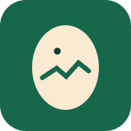

HatchTracker
Din kläckning, dag för dag
Snabbregistrering
Skriv in dagens värden utan att lämna startsidan.
Senaste mätning
Ingen mätning registrerad ännu.
Kommande milstolpar
Dag-för-dag-kalender
Välj en dag för att se vad som normalt händer och vad du bör göra.
Vad ska du göra?
Checklista
Ny mätning
Temperatur och fukt – senaste 30 mätningarna
Diagrammet visar dina sparade mätningar, inte direkta sensorvärden.
Mäthistorik
Följ varje ägg
Skapa kort utifrån antalet ägg i Inställningar, eller lägg till ett enskilt ägg. Status och observationer sparas på telefonen.
Vad behöver jag göra idag?
Detta är en guide, inte automatiska pushnotiser. Öppna appen varje dag.
Lysningsjournal
Anteckna resultatet per ägg. Osäkra resultat ska följas upp; bedöm inte livskraft efter en enda svårtolkad lysning.
Äggens viktminskning
Väg gärna samma märkta ägg med en noggrann våg. Viktminskningen ger en extra indikation på fuktbalansen.
Runt 11–14 % viktminskning till dag 18 används ibland som riktvärde för hönsägg, men variationer förekommer. Ändra inte fukten drastiskt efter en enstaka vägning.
Felsökningsguide
Förbered kycklingarnas första dygn
I en uppvärmd uppfödningslåda används ofta omkring 32–35 °C i den varma zonen första veckan. Det ska alltid finnas en svalare zon, och kycklingarnas beteende avgör om värmen är lämplig. Skydda mot brandrisk och använd säker värmekälla.
Praktisk tidslinje
Dag 0: Lägg in äggen, notera antal, startdatum och eventuellt startvikt.
Dag 7: Första ordentliga lysningen.
Dag 14: Följ upp utveckling och luftblåsa.
Dag 18: Avsluta vändningen och förbered kläckning.
Dag 19–21+: Håll kläckaren stabil och stör så lite som möjligt.
Efter kläckning: Värme, säkert vatten, kycklingstartfoder och uppsikt.
Din kläckning
Avsluta kläckningen
Spara resultatet och starta en ny omgång. Journaler och äggkort följer med i historiken.
Tidigare kläckningar
Säkerhetskopiering
Dina data sparas endast på denna iPhone och synkas inte automatiskt. Exportera regelbundet en kopia.
Om råden
Guiden gäller hönsägg i kläckmaskin. Cirka 37,5 °C är vanligt för fläktstyrda maskiner. Stilluftsmaskiner kan kräva annan temperatur. Följ tillverkarens anvisningar. Fuktbehov varierar; bedöm även luftblåsans utveckling och äggens viktminskning.
Vid osäkerhet om levande embryo, ta inte bort ägget enbart efter en enda tveksam lysning.